|
Random Events
Although not a skill in itself, random events may affect your other skills.
While playing RuneScape you may notice the occasional odd event happening near you. Some of these events are harmful, but others can benefit you.
If you keep your wits about you then you may well profit from these events and come off better because of them, but if you're not paying attention then beware!
Guardians:
Some places are often protected, and you may encounter these guardians in your travels. They are often powerful, and your best chance is to run as they won't pursue you for very long. Though if you feel you're up to the challange you can try and defeat them and collect their drops.
|
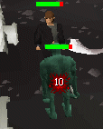 |
River Troll
River Trolls are very possesive of their fish and will try to chase you away from them, though they won't move far.
|
Golem
While mining you may disturb the sleep of one of these rocky giants, they're tough but fairly slow and barely intelligent.
|
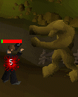 |
 |
Watchman (Members only)
Employed by local authorities to crack down on crime, they don't have a good opinion on thieves. |
Zombie
Zombies will sometimes get drawn to you by the sight of freshly buried bones. |
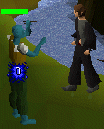 |
|
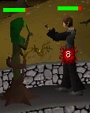 |
Tree Spirit
Tree Spirits don't appreciate their homes being cut down, though they won't wander far from them. |
Shade
Shades are vengeful spirits and will guard burial sites jealously. |
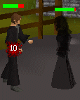 |
Gift Givers:
It's always nice to receive, and some events in RuneScape can be taken advantage of for your own benefit.
|
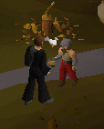 |
Drunk Dwarf
Dwarves often drink heavily, and will sometimes accost passers by. Chat to him and he'll share his meal of kebabs and beer. |
Strange Plant (Members only)
There are some Strange Plants that occasionally spring up and quickly grow into carnivorous flora which will attack, take the fruit when it's ripe and you can eat it to restore your Energy. |
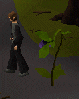 |
|
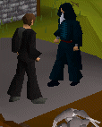 |
Mysterious Old Man
Either he has his own agenda, or is just very lonely, this Mysterious Old Man will reward you for talking to him. Though he'll teleport you somewhere else if you ignore him for too long. |
Maze
You might get teleported into a large Maze by some mysterious old man, but don't worry. Find the centre and you'll be released along with a reward, the quicker you manage it the bigger your reward! |
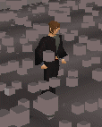 |
|
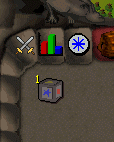 |
Strange Box
If you're given a Strange Box by a mysterious old man, open it and answer the question to receive a reward. Be careful though; they will duplicate themselves until your inventory is full! |
Genie
For some reason a Genie may feel compelled to grant you a wish and advance one of your skills, they're fickle creatures and will teleport you if you choose not to accept their offer. |
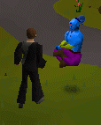 |
|
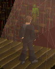 |
Mime
There's a mystical theater hidden away which you may get teleported to, all you have to do is follow the Mime's performance and you'll be released along with a reward. |
Dangerous:
There are some events which should just be avoided, stear clear and you won't have any problems.
Swarm
Swarms of insects can be dangerous and hard to disperse, it's best to flee and they'll leave you alone. |
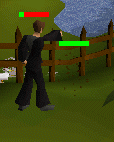 |
 |
Ent
Some trees like to fight back, if a tree turns out to be an Ent then leave it well alone or your Axe may get broken. Fortunately Bob can repair Axes in Lumbridge, for a price of course. |
Whirlpool
Whirlpools can suck your fishing equipment straight out of your hands. |
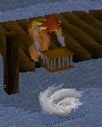 |
 |
Exploding Rock
Sometimes there are dangerous gases in mining sites, watch out that a spark from your Pickaxe doesn't ignite it or it'll get damage.
Fortunately Nurmof can repair Pickaxes in the Dwarven Mines, for a price of course. |
Poison Gas (Members only)
Some chests are filled with Poisonous Gas to deter would be thieves, just get clear of the area until it dissipates so you don't fall victim to it. |
 |
Inconveniences:
You just can't rely on anything, either your equipment falls apart or gets thrown away.
Fishing
There are some big fish around which don't like being caught, they might steal your equipment and spit it out nearby. |
Mining
Pickaxes are sometimes faulty, and you may lose the head if you swing too wildly. Just reattach it and away you go. |
Woodcutting
Axes are sometimes faulty, and you may lose the head if you swing too wildly. Just reattach it and away you go. |
|